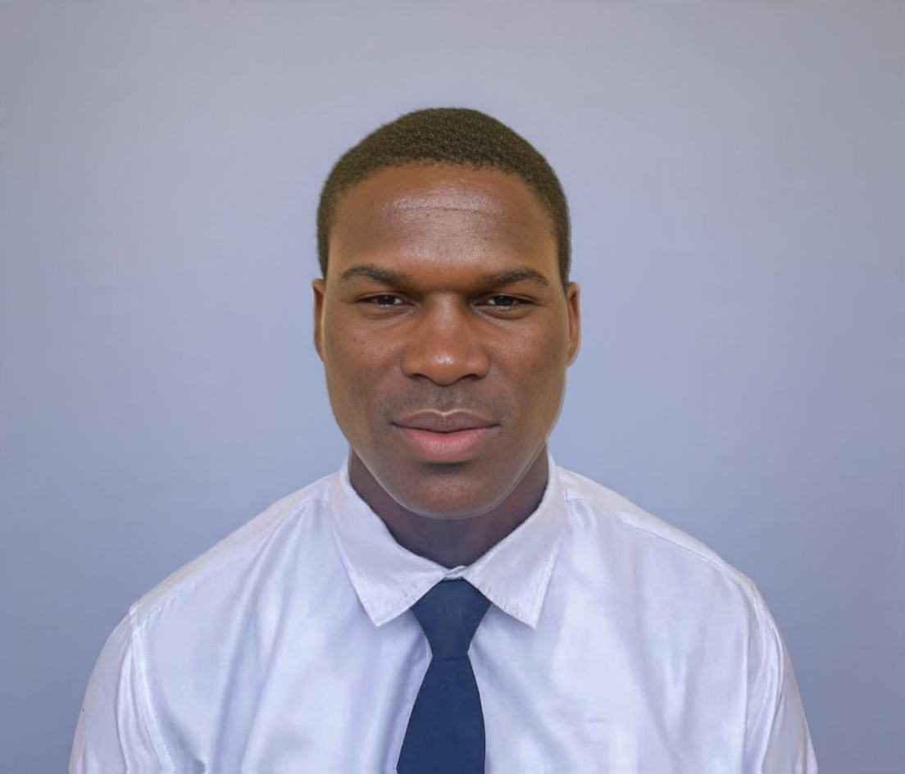
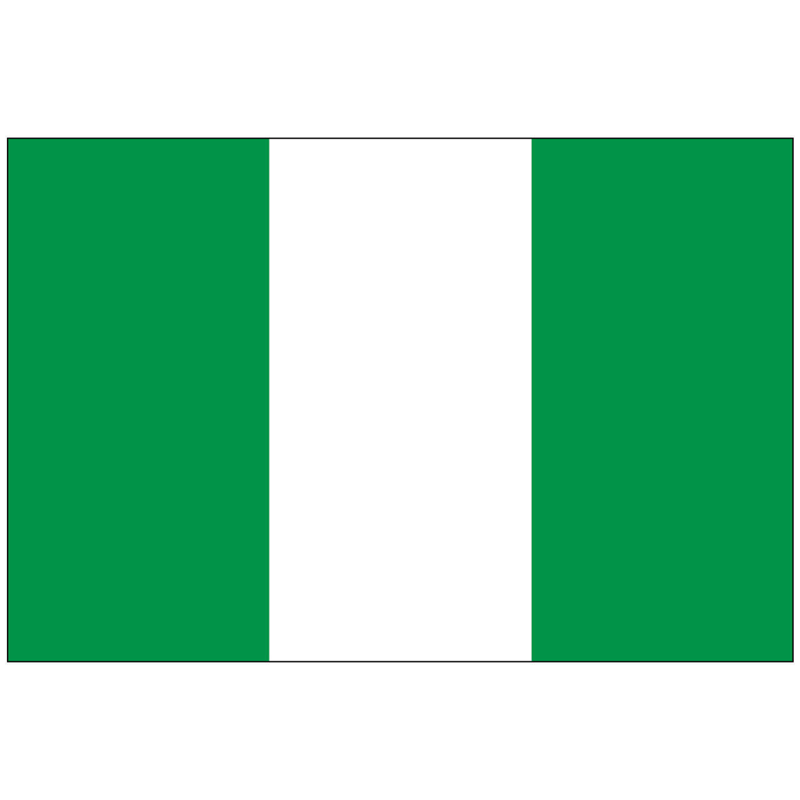

Roland E. Udensi
About Me

My name is Roland Ezennaya Udensi, and I am from Abia State, Nigeria. I am passionate about learning and creating, especially through programming and technology. Outside of coding, I enjoy playing soccer and playing the piano, which gives me a creative balance. I am always interested in developing new skills, taking on challenges, and becoming better at the things I enjoy.
Abia, Nigeria

Official flag of Nigeria
Nigeria is a vibrant country in West Africa, known for its rich culture, diverse people, and strong entrepreneurial spirit. I am particularly proud of my roots in Abia State, a beautiful state in southeastern Nigeria known for its hardworking people, rich Igbo heritage, and bustling commercial centers. From the energy of Aba to the peaceful landscapes across the state, Abia represents a blend of tradition, creativity, and determination that continues to shape who I am.